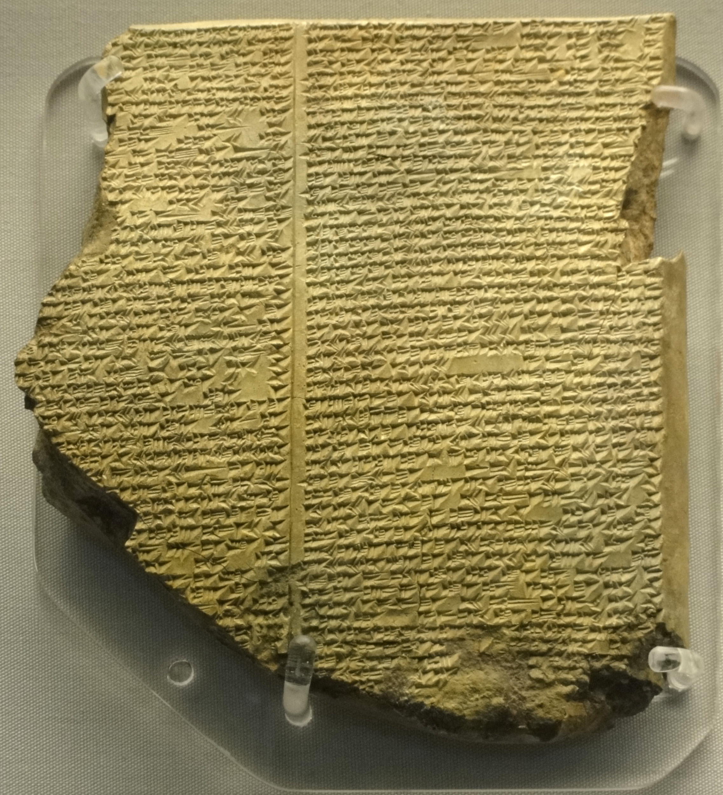

Library of Ashurbanipal

- Find Name
- Library of Ashurbanipal
- Historical Period
- Neo-Assyrian period, 7th century BC
- Artifact Date
- 7th century BC (reign of Ashurbanipal, 669–631 BC)
- Date Discovered
- 1849–1851 (excavated)
- Discovery Location
- Nineveh, Iraq
- Current Location
- British Museum, London (tablets)
- Timeline Era
- Divided Monarchy
- Description
- The ancient world's greatest library: some 30,000 cuneiform tablets gathered by King Ashurbanipal at Nineveh, excavated by Austen Henry Layard and Hormuzd Rassam. It holds royal annals, omens, hymns, and the Epic of Gilgamesh, whose flood tablet George Smith deciphered in 1872.
- Biblical Significance
- The library opens the mind of the empire that swallowed Israel and threatened Judah. Its annals, prayers, and epics show the world Jonah walked into and Nahum pronounced judgment on — a great city, learned and powerful, and still accountable to God.
- Evidence Class
- Contextual
- Interpretations
- Scholars agree the library is Ashurbanipal's royal collection at Nineveh; the individual tablets span many earlier centuries, so the library illuminates Assyrian culture broadly rather than a single biblical year.
- Scripture Illuminated
- Related Books
- Related Places
Awaiting Review Not yet checked against scholarly sources. Treat its claims as provisional until this entry is reviewed. About verification
Last reviewed: not yet reviewed